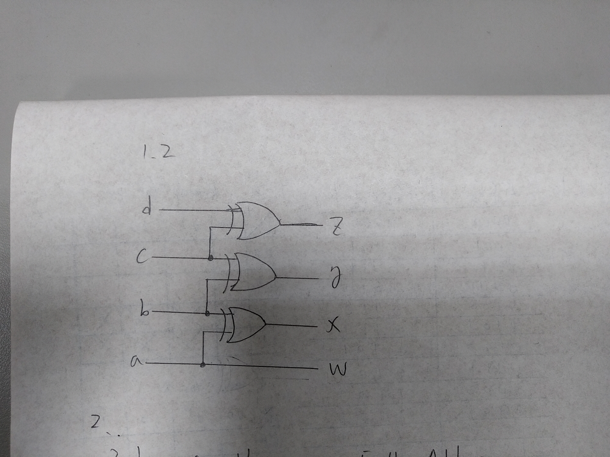
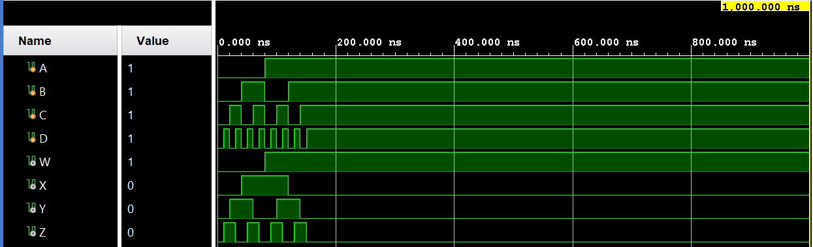
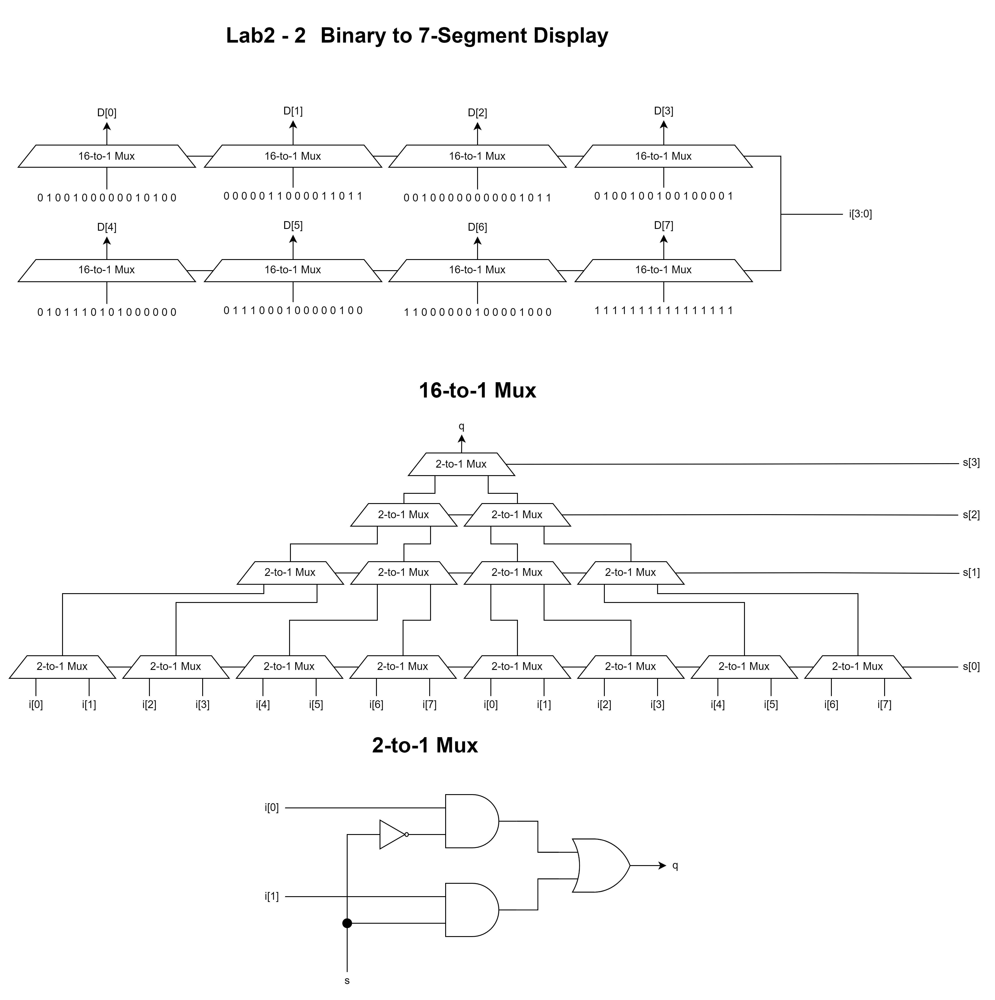
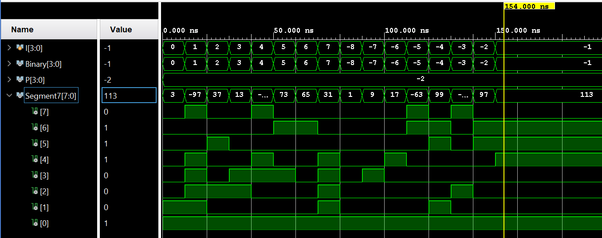
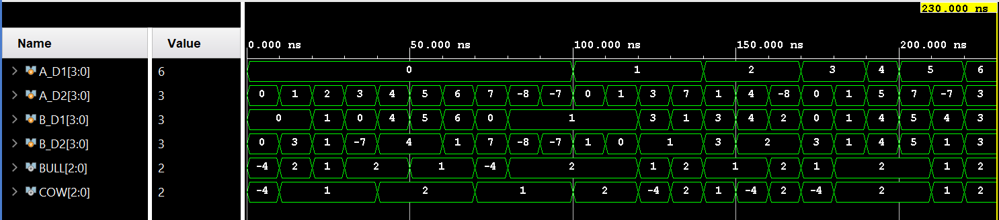

Lab 2 - FPGA Emulation Report
106033233 資工大四 周聖諺
Lab 2 - 1: 4-Bit Binary-To-Gray-Code Converter
Design Specification
Source Code
Input: a, b, c, d
Output: w, x, y, z
Design Implementation
First, we can observe that the MSB of the Gray code and binary code are always the same so it doesn't need any conversion. The Boolean equation is a=w
In addition, if you list the table of the conversion from 4-bit Gray-code to binary code, you can observe that a⊕b=x, b⊕c=y and, c⊕d=z. Thus, we can design the circuit as the following code.
Boolean Equation:
a=w
a⊕b=x
b⊕c=y
c⊕d=z
BCD to Gray Code Truth Table
| Decimal |
Binary Code (abcd) |
Gray Code (wxyz) |
| 0 |
0000 |
0000 |
| 1 |
0001 |
0001 |
| 2 |
0010 |
0011 |
| 3 |
0011 |
0010 |
| 4 |
0100 |
0110 |
| 5 |
0101 |
0111 |
| 6 |
0110 |
0101 |
| 7 |
0111 |
0100 |
| 8 |
1000 |
1100 |
| 9 |
1001 |
1100 |
| 10 |
1010 |
1111 |
| 11 |
1011 |
1110 |
| 12 |
1100 |
1010 |
| 13 |
1101 |
1011 |
| 14 |
1110 |
1001 |
| 15 |
1111 |
1000 |
Verilog Code
assign w = a;
assign x = a ^ b;
assign y = b ^ c;
assign z = c ^ d;
I/O Pin Assignment
| I/O |
a |
b |
c |
d |
w |
x |
y |
z |
| LOC |
W17 |
W16 |
V16 |
V17 |
V19 |
U19 |
E19 |
U16 |
Block Diagram

RTL Simulation

Lab 2 - 2: Binary to 7-Segment Display Decoder
Source Code
Design Specification
Binary to 7-Segment Display Decoder
Input [3:0]i
Output [3:0]d, [3:0]P, [7:0]D
Design Implementation
4-Bits Binary Displayer
It's quite easy to display the 4-bit binary number. All we need to do is to light the LED up while the corresponding bit is 1, vice versa.
Boolean Equation:
d[0]=i[0]d[1]=i[1]d[2]=i[2]d[3]=i[3]
Verilog Code
assign d = i;
7-Segment Display Decoder
We design the logic circuit with K-map to implement the decoder, but in Verilog, to simplify the code, we implement the logic with switch-case.
Boolean Equation:
D[0]=[i[0]∧(¬i[1])∧(¬(i[3]⊕i[2])]∨[(¬i[1])∧(¬i[0])∧(¬i[3])∧i[2]]∨[i[1]∧i[0]∧i[3]∧(¬i[2]])]
D[1]=[(¬i[3])∧i[2]∧(i[1]⊕i[0]])]∨[i[3]∧i[2]∧(i[1]∨((¬i[1])∧(¬i[0])))]∨[i[3]∧i[1]∧i[0]]
D[2]=[i[3]∧i[2]∧(i[1]∨(¬i[0]))]∨[(¬i[3])∧(¬i[2])∧i[1]∧(¬i[0])]
D[3]=[(¬i[1])∧i[0]∧(¬i[3])∧(¬i[2])]∨[i[1]∧i[0]∧i[2]]∨[(¬(i[1]⊕i[0]))∧((¬i[3])∧i[2])]∨[i[1]∧(¬i[0])∧i[3]∧(¬i[2])]
D[4]=[(¬i[1])∧i[0]∧((¬i[3])∨(i[3]∧(¬i[2])))]∨[i[1]∧i[0]∧(¬i[3])]∨[((¬i[1])∨i[0])∧(¬i[3])∧i[2]]
D[5]=[(i[1]∨i[0])∧(¬i[3])∧(¬i[2])]∨[i[1]∧i[0]∧(¬i[3])]∨[i[1]∧(¬i[0])∧(¬(i[3]⊕i[2]))]
D[6]=[(¬i[1])∧(¬i[3])∧(¬i[2])]∨[(¬i[1])∧(¬i[0])∧(¬(i[3]⊕i[2]))]∨[i[1]∧i[0]∧(¬i[3])∧i[2]]
D[7]=1
Verilog Code
assign P = ~4'b0001;
always@(i)
case(i)
4'd0: D=8'b0000001_1;
4'd1: D=8'b1001111_1;
4'd2: D=8'b0010010_1;
4'd3: D=8'b0000110_1;
4'd4: D=8'b1001100_1;
4'd5: D=8'b0100100_1;
4'd6: D=8'b0100000_1;
4'd7: D=8'b0001111_1;
4'd8: D=8'b0000000_1;
4'd9: D=8'b0000100_1;
4'd10: D=8'b0001000_1;
4'd11: D=8'b1100000_1;
4'd12: D=8'b0110001_1;
4'd13: D=8'b1000010_1;
4'd14: D=8'b0110000_1;
4'd15: D=8'b0111000_1;
default: D= 8'b0111000_1;
endcase
Logic Diagram

RTL Simulation

I/O Pin Assignment
| I/O |
i[3] |
i[2] |
i[1] |
i[0] |
d[3] |
d[2] |
d[1] |
d[0] |
| LOC |
W17 |
W16 |
V16 |
V17 |
V19 |
U19 |
E19 |
U16 |
| I/O |
P[3] |
P[2] |
P[1] |
P[0] |
D[7] |
D[6] |
D[5] |
D[4] |
D[3] |
D[2] |
D[1] |
D[0] |
| LOC |
W4 |
V4 |
U4 |
U2 |
W7 |
W6 |
U8 |
V8 |
U5 |
V5 |
U7 |
V7 |
Lab 2 - 3: Bull-And-Cow Game
Design Specification
Source Code
Bull-And-Cow Game
Input [3:0]A_D1, [3:0]A_D2, [3:0]B_D1, [3:0]B_D2,
Output [2:0] bull, [2:0] cow
Design Implementation
Bull-And-Cow Game
In the file lab2_3.v, I implement the logic circuit of the Bull-And-Cow game. The Bull shows the number of the right numbers in the right positions, which means the digit 1 of guessed number is the same as the digit of the correct number, so as digit 2. Denote the variable A_D1 and A_D2 are the first digit and the second digit of guessed number and B_D1 and B_D2 are the digits of the correct number. If A_D1 is equal to B_D1 and A_D2 is equal to B_D2, there are 2 bulls. If only one digit is in the right place, there is 1 bull, which can be implemented with XOR gate.
The number of cows represents the correct digits in the wrong place. As a result, If A_D1 is equal to B_D2 and A_D2 is equal to B_D1, there will be 2 cows.
Following are the Boolean equation and the code.
Boolean Equation
2 bull=((AD1[0]⊙BD1[0])∧(AD1[1]⊙BD1[1])∧(AD1[2]⊙BD1[2])∧(AD1[3]⊙BD1[3]))∧((AD2[0]⊙BD2[0])∧(AD2[1]⊙BD2[1])∧(AD2[2]⊙BD2[2])∧(AD2[3]⊙BD2[3]))1 bull=((AD1[0]⊙BD1[0])∧(AD1[1]⊙BD1[1])∧(AD1[2]⊙BD1[2])∧(AD1[3]⊙BD1[3]))⊕((AD2[0]⊙BD2[0])∧(AD2[1]⊙BD2[1])∧(AD2[2]⊙BD2[2])∧(AD2[3]⊙BD2[3]))0 bull=¬((AD1[0]⊙BD1[0])∧(AD1[1]⊙BD1[1])∧(AD1[2]⊙BD1[2])∧(AD1[3]⊙BD1[3]))∧¬((AD2[0]⊙BD2[0])∧(AD2[1]⊙BD2[1])∧(AD2[2]⊙BD2[2])∧(AD2[3]⊙BD2[3]))
2 cow=((AD1[0]⊙BD2[0])∧(AD1[1]⊙BD2[1])∧(AD1[2]⊙BD2[2])∧(AD1[3]⊙BD2[3]))∧((AD2[0]⊙BD1[0])∧(AD2[1]⊙BD1[1])∧(AD2[2]⊙BD1[2])∧(AD2[3]⊙BD1[3]))1 cow=((AD1[0]⊙BD2[0])∧(AD1[1]⊙BD2[1])∧(AD1[2]⊙BD2[2])∧(AD1[3]⊙BD2[3]))⊕((AD2[0]⊙BD1[0])∧(AD2[1]⊙BD1[1])∧(AD2[2]⊙BD1[2])∧(AD2[3]⊙BD1[3]))0 cow=¬((AD1[0]⊙BD2[0])∧(AD1[1]⊙BD2[1])∧(AD1[2]⊙BD2[2])∧(AD1[3]⊙BD2[3]))∧¬((AD2[0]⊙BD1[0])∧(AD2[1]⊙BD1[1])∧(AD2[2]⊙BD1[2])∧(AD2[3]⊙BD1[3]))
where ⊙ denote the XNOR gate(Not Exclusive OR)
Verilog Code
reg [2:0]BULL;
reg [2:0]COW;
assign bull[2] = (A_D1 == B_D1) && (A_D2 == B_D2);
assign bull[1] = (A_D1 == B_D1) ^ (A_D2 == B_D2);
assign bull[0] = (~(A_D1 == B_D1) && ~(A_D2 == B_D2));
assign cow[2] = (A_D1 == B_D2) && (A_D2 == B_D1);
assign cow[1] = (A_D1 == B_D2) ^ (A_D2 == B_D1);
assign cow[0] = (!(A_D1 == B_D2) && ~(A_D2 == B_D1));
Logic Diagram

RTL Simulation

I/O Pin Assignment
| I/O |
A_D1[0] |
A_D1[1] |
A_D1[2] |
A_D1[3] |
A_D2[0] |
A_D2[1] |
A_D2[2] |
A_D2[3] |
| LOC |
V17 |
V16 |
W16 |
W17 |
W15 |
V15 |
W14 |
W13 |
| I/O |
A_D1[0] |
A_D1[1] |
A_D1[2] |
A_D1[3] |
A_D2[0] |
A_D2[1] |
A_D2[2] |
A_D2[3] |
| LOC |
V17 |
V16 |
W16 |
W17 |
W15 |
V15 |
W14 |
W13 |
| I/O |
bull[2] |
bull[1] |
bull[0] |
cow[2] |
cow[1] |
cow[0] |
| LOC |
U19 |
E19 |
U16 |
U15 |
W18 |
V19 |
Discussion
In the lab 1-3, we've learned how to implement a combinatorial circuit on the FPGA board, how to set up the ports and how to synthesis and generate the bit-stream. Note that the 7-segment display is low-activate.
Conclusion
In this lab, I've learned that how to design a logical circuit with Verilog and simulate the behavior with RTL simulation. In addition, I've also learned how to program the FPGA and run the designed circuit on it.
Reference